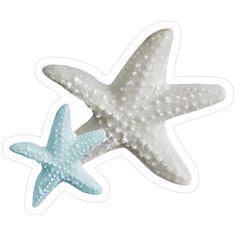
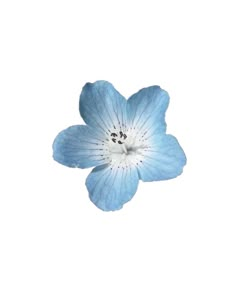
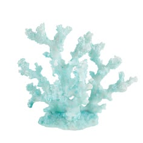
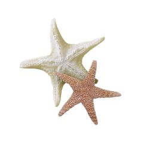
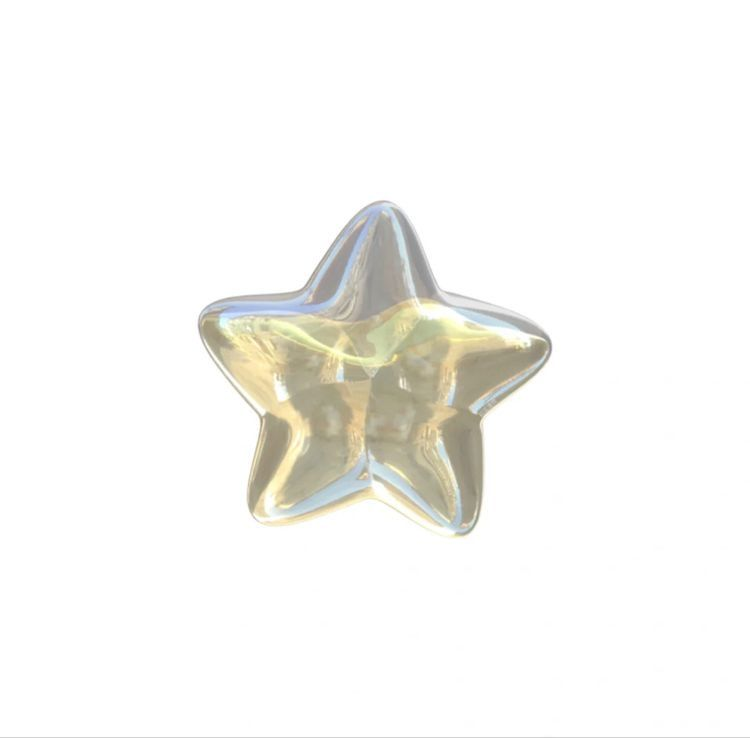
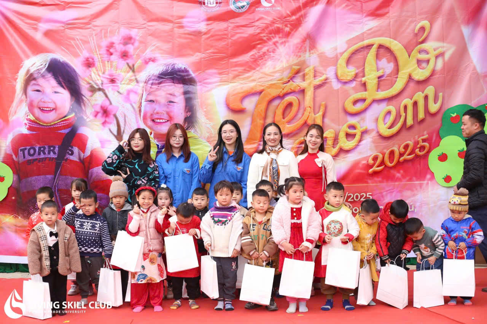
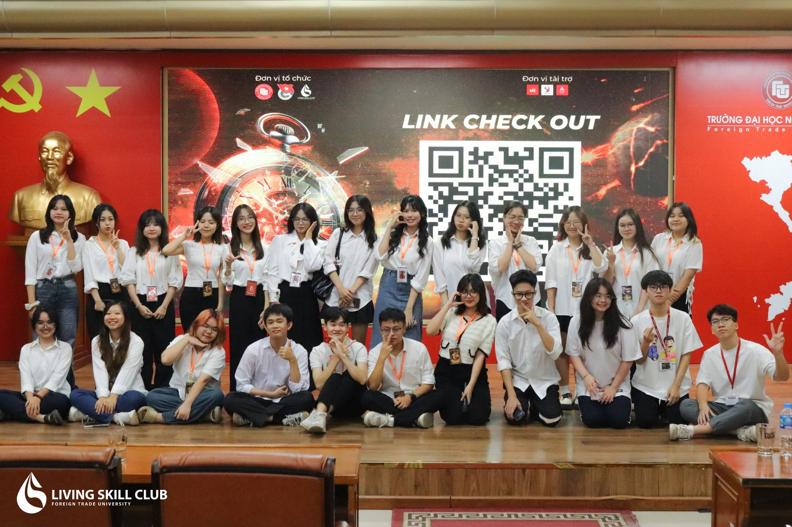
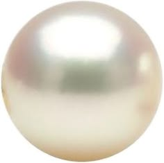

Welcome to my personal corner.
View ProjectsI'm a fourth-year International Economics student at Foreign Trade University (FTU), with a strong interest in economics, international business, data analysis, and research.
Beyond the classroom, I enjoy organizing community projects and working with teams to turn ideas into real activities. I'm looking for internship opportunities where I can apply my analytical thinking and organizational skills while continuing to learn.






Volunteer Project
A Lunar New Year volunteer program bringing gifts, games, and a traditional bánh chưng-making session to children in the northern highlands of Vietnam.

Student Club
Progressed from organizing committee member to Vice Head of the Organization Department over two years.
Programs involved in:

Feel free to reach out if you'd like to connect or collaborate.